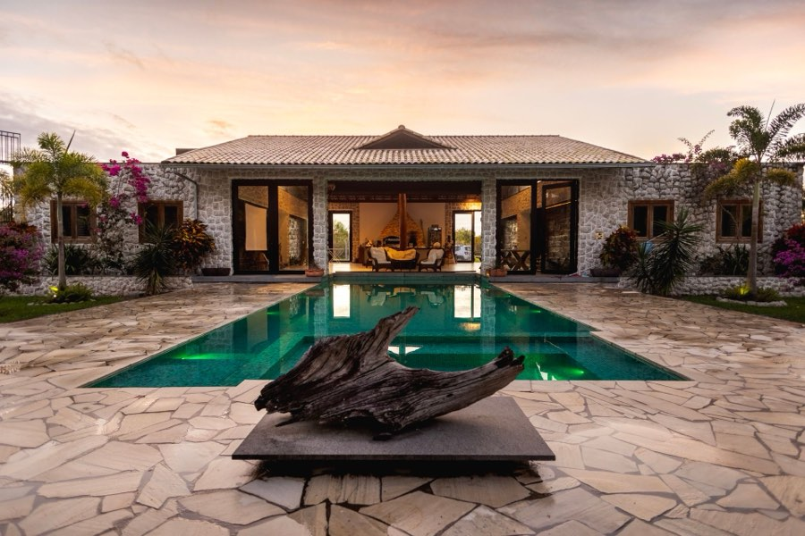

Hero — 1440
Pattern #32, Hero-Centric. The photograph owns the viewport; the headline sits on the lower third where the scrim is densest, so the type never fights the image.

Private office · Bolivia
Where architecture becomes legacy
A closed portfolio of eleven residences. Most never reach a public listing.
Newly listed

The Ridgeline House
Ken Burns 1 → 1.08 over 20s · headline reveals by character on load
Hero — 375
Private office · Bolivia
Where architecture becomes legacy
Eleven residences. Most never publicly listed.
375 — nav collapses, peek card drops, CTA goes full width
What changes
- Display drops from fluid-max 95px to a fixed 40px.
- The peek card is removed rather than shrunk — it would compete with the CTA.
- Lead copy shortens; it is a separate i18n string, not a truncation.
- Ken Burns still runs but at reduced amplitude on small screens.
Motion & fallbacks
- Headline — SplitText by character, 0.015s stagger,
expo.out. Reverted on cleanup so the text node is restored for assistive tech. - Parallax — the media layer moves
yPercent: 10on scrub. Applied to the photograph only; never to the headline or the buttons. - Reduced motion — Ken Burns, parallax, and the character reveal are all skipped, and the hero renders at its final state. The scroll cue stops pulsing.
- No JS — everything above is decoration on top of static markup. The headline, lead, and both CTAs are in the HTML and fully visible without a single script.